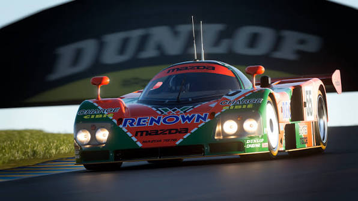
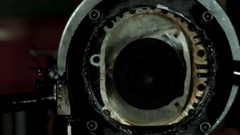

A lo largo de sus cien años de historia, Mazda pasó de hacer productos de corcho a convertirse en un
fabricante de automóviles independiente, con éxito y presencia en todo el mundo. Para Mazda, la
innovación técnica siempre ha sido un elemento central de su apuesta y nunca le ha dado miedo ponerla a
prueba en el apasionante mundo de la competición.
Ampliar informacion

Pocas marcas se han aventurado a fabricar motores rotativos. Entre ellas están Mercedes-Benz,
Citroën y
Mazda. Este tipo de propulsores se caracterizan por ser pequeños, silenciosos y potentes; sin
embargo,
su coste de mantenimiento es mayor ya que sus segmentos se desgastan antes y su nivel de emisiones
es
mucho más elevado, algo que no es bienvenido en las ciudades donde cada vez prima más la normativa
anticontaminación.
Ampliar informacion